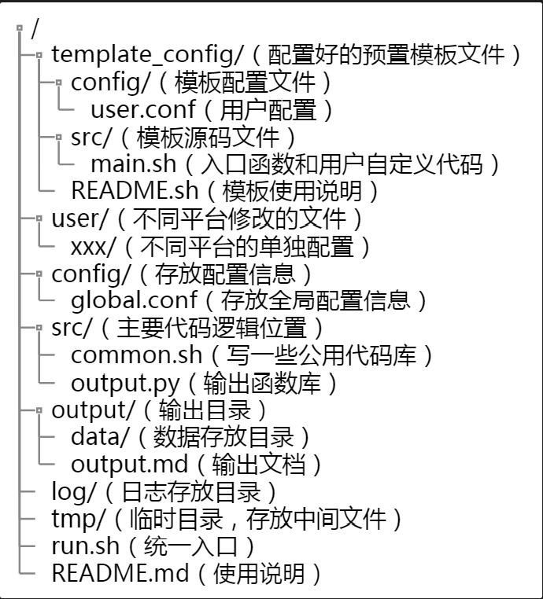

一、开发
1. 工具
- 设计画图（流程图、类图、时序图等）: plantuml
- 框架画图: drawio（vscode安装插件可直接画图）
- 接口文档和项目文档: showdoc（支持docker搭建，并支持plantuml）
- 场景梳理:
xmind - 接口管理器: yapi
2. 开发流程
- 需求定义
- 用户需求，由PO和开发一起给出，主要由用户故事组成，每个用户故事工作量控制在3-5d
- 系统需求，由开发根据用户需求进行输出，将每个用户故事提出方案和各种考虑，输出场景等
- 需求讲解、反述
- 场景梳理和工作量评估
- 正常场景和异常场景梳理
- 需求对齐，检视工作量是否可达
- 设计
- 安全编码设计
- 评审、修改
- 测试用例评审
- 编码
- 联调和自测
- 测试覆盖的场景记录
- 缺陷预防
- 代码走读
- 代码扫描和覆盖率测试
- 接口测试（自动化或配合接口平台测试）
- 需求检视
- checklist（编码+安全）
- BVT测试（配合测试达到自动化）
- 联调和覆盖测试过得可以不测
- 转测试
- 问题修改
3. 工作量梳理
- 按照开发流程每一步进行细化梳理
- 先根据交互设计图梳理出要做的需求点，不能有遗漏，漏掉的就是加班
4. 设计
4.1. 设计思想
- 当前需求可能不考虑某些场景，比如多xxx，但是设计上需要考虑，防止以后需求变化需要重构代码
- 基于未来去设计，基于现在来开发
- 设计模式
- 设计流程: 职责->接口->实现->场景
- 生产者消费者关系明确，观察者角色明确
- 模块解耦，不要依赖外部某个模块的实现，可以通过定义添加/移除 观察者函数来实现不依赖外部
- 接口限制越死，外部依赖越小
- 类的区分考虑分层和职责，不能单纯只想模块
- 将业务分离，通用模块尽量少业务代码，抽象成通用逻辑
- 不要太过深入技术考虑，特殊场景考虑从用户使用角度分离，如果是此用户使用场景很小，可以进行规避不处理
- 考虑场景要从业务角度进行考虑，定义好使用场景再从技术角度分析是否可行
防遗漏checklist
- 对外接口线程安全
- 状态维护由谁来做
- 集群分布式状态问题
- 升级场景是否配置变化需要转换
- 改动后，如何排查
- 改动后，是否增加维护成本
- 能不使用缓存就不使用
- 使用缓存的生命周期需要明确写出
- 宏观上考虑一下，设计是否合理，不要总是深入思考
- 客户端考虑跨平台兼容性
4.2. 模板
1) 中型需求模板（开发周期2周）
1 | # 一、介绍 |
1 | # 一、设计背景和目标 |
5. 编码思想
5.1. 通用工具类开发
参考目录结构
- 编码只写公用函数
/src/common.sh，对于每个平台的配置和代码单独有一个目录/user/xxx - 公用函数调用根据平台自己的入口检测返回来决定是否运行此平台配置
- 输出提供公用库
/src/output.py，平台可调用或自己定义- 考虑以
key-value的形式 - 定义优先级
- 输出各个格式提供接口（markdown、html、json、xml、excel）
- 考虑以
- 对不同平台的开发来说，将模板配置拷贝一份放入
/user/xxx下，修改其中的config和src即可
5.2. 安全相关
参考安全开发专项笔记
5.3. 日志
原则
- 出现错误，如果可以客户自己解决，打印用户日志
- 能前置解决的产品才是最好的产品
- 如果需要开发介入，一定要可以从日志中快速定位问题和流程
- 日志不暴露符号名称，防止被分析逆向
日志五要素（日志有效性）
- What: 什么错误，一般是函数级错误
- Reason: 错误信息（排查使用），行级错误和当前状态
- CausedBy: 由什么造成（深层次原因）
- Will: 造成什么后果，业务级错误
- HowTo: 如何进行恢复，给运维人员处理建议
等级输出
- fatal
- error是需要人为处理的日志
- warn是存在问题，重试可以恢复，如果多次需要提升为error
- info一般为生命周期、服务启动、配置变更、审计日志
- debug是技术支持和运维人员（非开发人员）可以开启排查使用
- trace开发自己调试过程的日志，上线不开启trace
- 流程分支尽量有日志输出如果太多需要降低等级
- 一个流程分支尽量只有一条日志输出，不要每个分支都有一条，可以通过日志定位流程即可
5.4. 注释
- 代码可以直观了解的不需要注释
- 代码不可以直观了解或者不告知就无法理解的逻辑需要注释
- 注释不是描述代码流程，而是解释流程原因
5.5. 命名规范
仅供参考（主要参考linux源码和python库）
- 变量命名使用下划线
- 函数命名使用下划线
- 类命名使用大驼峰
- 宏定义使用下划线，全字母大写
5.6. 断言和报错
- 外部输入（纯外部第三方）必须校验，由于外部输入导致的崩溃是不被允许的
- 如果输入处理完善，内部不会出现的问题，使用断言进行判断
- 如果外部输入正常，跑动过程出现了异常，使用判断加报错处理
- 使用智能断言，信息中写明出现的上下文，断言原因机制会保障
5.7. 代码中文字符处理
- 如果需要使用中文，不能放到代码中去，防止因为编码导致的乱码
- 需要单独拉出一个json文件或txt文件进行保存，代码进行调用
6. 项目基础模块
6.1. 语言和框架
1. 异常和错误处理
2. 可移植性
- 模块化、插件化
3. 集群和分布式
6.2. 日志
1. 用户排查日志
2. 开发排查日志
3. 调试日志
6.3. 进程/线程/协程管理
1. 消息通信机制
2. 无锁的几种实现
- 无锁循环队列
- 保证逻辑跑在一个线程，如果不在此线程，只push任务（runInLoop()）
6.4. 公共工具
1. 进程/线程锁
2. json解析
3. 共享内存
4. 数据库接口
5. 配置文件接口
6.5. 安全
1. 服务和端口管理
2. 密码管理
3. 配置管理
4. 代码管理
5. 数据管理
二、管理
1. 团队凝聚力
| 学生团队 | 公司团队 | |
|---|---|---|
| 凝聚力源头 | 无 | 工资绩效 |
| 影响 | 无 | 收入 |
学生团队
- 一人犯错集体受罚
- 迟到可以连带受罚
- 把握好度，不生成怨恨
团建
- 去唱K
- 吃饭
- 一起出去玩
- 适当放假
人员和职责
- 项目经理
- 负责项目进度把控
- 人员和资源协调
- 组织站会
- 问题决策
- 外部对接
- 敏捷教练(敏捷开发项目需要)
- 监督和指导敏捷项目各项流程
- 敏捷培训
- PO团队
- 团队只有一个声音给出需求定义
- 关心用户体验给出界面交互设计方案
- 研发CTO
- 协助项目经理做事
- 负责版本合入并做代码质量把控和代码走读审查
- 对版本各方原理熟悉，指导各个研发人员
- 测试CTO
- 负责版本的测试人员测试用例评审
- 负责各项环境搭建和资源调度
- 架构师
- 根据界面交互设计代码语言、工具、环境
- 设计代码流程和实现方案
- 具体问题跟研发人员共同协商解决方案
- 研发过程实时跟进研发人员的方案是否符合预期
- 技术问题到架构师为止，保证一定有解决方案
- 安全专员
- 提供安全相关指导
- 安全测试专员
- 提供安全渗透测试用例
- 发布后出了漏洞的背锅人
2. 进度管理
进度预估
- 工具：
WBS - 尽可能细分模块
- 预估时间，单位：
人天 - 预估好每个人的工作量是否平均
- 预估每个人的工作效率以及工作质量
- 预估时间，单位：
- 风险把控
- 每天检查进度，通过进度和计划预估风险
- 风险提出并想出相应方案解决
- 不要相信成员在时间内能完成，一定要跟进
里程碑
- 适当制定里程碑，具有时间节点
- 要完成功能
- 可完成功能
- 暂时不需要完成的功能
- 将项目划分为若干个里程碑
- 做好每个里程碑完不成的方案
效率保证
- 写大概10%的时候找负责人讲思路，防止思路不正确重写
- 晨会
- 昨天做了什么
- 今天要做什么
- 有什么问题需要协调
- 自己模块百分比
- 跟踪进度
- 目标导向
- 每天目标
- 每周目标
- 每个阶段目标
- 白板贴纸
- to do
- doing
- done
- bug跟踪记录
- 提一个bug
- 问题描述
- 问题复现步骤
- 问题现象
- 期望现象
- 问题环境
- 问题时间
- 解决一个bug
- 问题定位过程
- 问题原因描述
- 改动原理概述
- 可能影响模块
- 额外复现步骤
- 可验证的版本号
- bug列表整理到项目管理工具中
- 提一个bug
3. 总结收获
- 周会进行总结
- 本周计划完成情况
- 总体进度完成情况
- 下周计划
- 个人总结
- 做得好的
- 做的不好的
- 对团队有什么建议和措施
- 项目结题总结报告
- 代码审查报告
- 代码扫描报告
- 系统测试报告
- 覆盖率报告
- 单元测试报告
- 验收过程记录
- 测试验收报告
- 设计及方案文档
- 代码及代码说明文档
- 使用手册及注意事项
- 培训资料及培训记录
- 结项报告
4. 功能模块开发管理
4.1. 项目跟踪
1) 记录模板
1 | # 一、总述 |
5. 工具
- git管理工具：
gitlab - 代码扫描工具：
infer、clov - 外网穿透：
sunny - 测试自动化框架:
robot framework (python)